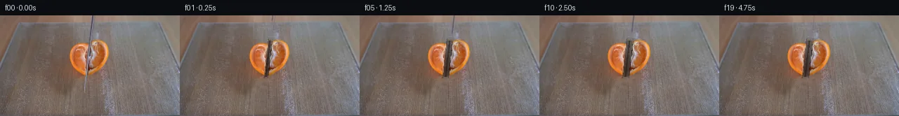

![首帧]()

Round 00
2026-11-05T18:03:23.488992+00:00像素候选变化代码 +239/−0inspection 更新
pixels e3fdc5fbc2586c92 · code 97c3fad50ce28cb4
查看本轮 generate.py 真实 diff
--- previous/generate.py
+++ current/generate.py
@@ -0,0 +1,239 @@
+"""PixelWorld vision-input continuation, case_0041.
+
+Frame 00 is the untouched first_frame.png. Frames 01-19 are built with local
+pixel operations: segmented left/right tangerine sprites, a reconstructed
+static glass-board background, and an analytically composited steel blade.
+See OBSERVATION.md and METHOD.md for details.
+"""
+from pathlib import Path
+import numpy as np
+from PIL import Image, ImageDraw, ImageFont
+from scipy import ndimage as ndi
+import artifact_io
+
+CASE = Path(__file__).parent
+rng = np.random.default_rng(20261106)
+
+# ---------------------------------------------------------------- geometry
+H, W = 144, 256
+SLOPE, X0 = -0.1155, 132.0312 # blade centre x(y) = X0 + SLOPE*y
+BLADE_TIP_Y0 = 109.0 # tip y in frame 0
+blade_x0 = X0 + SLOPE * np.arange(H)
+
+yy, xx = np.mgrid[0:H, 0:W]
+dline = xx - blade_x0[yy] # signed perpendicular-ish distance
+
+# per-frame schedule (see OBSERVATION.md)
+DYS = [0, 4, 9, 14, 19, 23, 27, 30, 33, 33,
+ 20, 7, -7, -22, -38, -55, -73, -90, -106, -120]
+GAPS = [0, 1, 2, 3, 3, 4, 4, 5, 5, 5,
+ 5, 5, 5, 5, 5, 5, 5, 5, 5, 5]
+
+frame0 = np.array(Image.open(CASE / 'first_frame.png').convert('RGB'))
+assert frame0.shape == (H, W, 3)
+f0i = frame0.astype(np.float64)
+r, g, b = f0i[:, :, 0], f0i[:, :, 1], f0i[:, :, 2]
+mx = f0i.max(2); mn = f0i.min(2); sat = mx - mn; mean = f0i.mean(2)
+
+# ---------------------------------------------------------------- fruit mask
+peel = (r > 155) & (g > 55) & (g < 155) & (b < 95) & (r - b > 80)
+flesh_warm = (r > 140) & (r >= g - 8) & (g >= b - 25) & (sat > 24) & (r - b > 8)
+pith = (np.abs(dline) < 6.5) & (yy >= 34) & (yy <= 78) & (mx > 160) & \
+ (mn > 118) & (r >= b - 8) & (g >= b - 14)
+seed = peel | flesh_warm | pith
+
+fruit = seed.copy()
+# span-fill the flat cut face, rows 35..75
+for y in range(35, 76):
+ xs = np.where(seed[y, 92:162])[0] + 92
+ if len(xs) >= 2:
+ x0, x1 = xs.min(), xs.max()
+ rv = r[y, x0:x1 + 1]; bv = b[y, x0:x1 + 1]
+ mxv = mx[y, x0:x1 + 1]; satv = sat[y, x0:x1 + 1]
+ interior = (rv - bv > 16) | (mxv < 140) | (satv > 42) | seed[y, x0:x1 + 1]
+ fruit[y, x0:x1 + 1] |= interior
+# dark contact crescent / shadowed peel under the lobes, rows 73..87
+cand = (yy >= 73) & (yy <= 87) & (xx >= 96) & (xx <= 158)
+darkwarm = (mean < 102) & (r - b > 8) & (mn > 35)
+fruit |= ndi.binary_dilation(seed, iterations=2) & cand & darkwarm
+fruit = ndi.binary_closing(fruit, iterations=2)
+fruit = ndi.binary_opening(fruit, iterations=1)
+lab, n = ndi.label(fruit)
+sizes = np.bincount(lab.ravel())
+fruit = np.isin(lab, np.where(sizes > 120)[0])
+fruit &= (yy >= 34) & (yy <= 88) & (xx >= 95) & (xx <= 158)
+fruit &= np.abs(dline) > 1.1 # blade band never belongs to a sprite
+
+# expanded alpha mask: core + the photo's own 1px anti-alias ring (ring pixels
+# already read as fruit/board blends, so paste them opaquely)
+fruit_aa = ndi.binary_dilation(fruit, iterations=1) & (xx >= 94) & (xx <= 160) \
+ & (yy >= 33) & (yy <= 90) & (np.abs(dline) > 1.6)
+# drop steel-tinted pixels from the ring (the blade side), keep warm/board ones
+steelish = (b > r) & (r < 150)
+fruit_aa &= ~(steelish & (np.abs(dline) < 3.5))
+
+# ------------------------------------------------------- cut-edge shading
+# bake a dark cut wall + faint pith sheen onto a copy of the source frame
+shaded = f0i.copy()
+ad = np.abs(dline)
+dark_wall = fruit_aa & (ad < 2.8) & (ad >= 1.6)
+shaded[dark_wall] *= 0.72
+pith_edge = fruit_aa & (ad >= 2.8) & (ad < 4.0) & (yy >= 40) & (yy <= 72)
+shaded[pith_edge] = shaded[pith_edge] * 0.7 + np.array([222.0, 210.0, 190.0]) * 0.3
+
+left_mask = fruit_aa & (dline < 0)
+right_mask = fruit_aa & (dline > 0)
+
+def paste_sprite(canvas, mask, ox):
… diff truncated; 152 more lines …